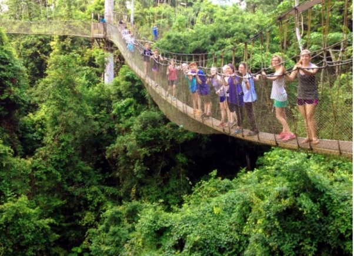

Discover Ghana: A Land of Rich Culture, Flavourful Food, and Unforgettable Festivals
Have you ever dreamed of a place where culture, history, and modernity blend seamlessly? A place where every meal tells a story, every fabric holds centuries of tradition, and every festival bursts with colour and life? Ghana is that place.
Picture yourself walking through bustling markets filled with the vibrant hues of kente cloth, the aroma of spicy jollof rice wafting through the air. Imagine joining in the rhythmic dance at a local festival, where the energy is so contagious that you can't help but move to the beat. This is the real Ghana—a country that invites you to experience its heart and soul.
Ready to embark on a journey through Ghana’s rich cultural tapestry, mouth-watering cuisine, and lively celebrations?
The Dark History of the Slave Trade in Ghana and the Legacy of the Castles
Ghana, while celebrated today for its vibrant culture and welcoming people,
also bears the scars of a painful past that continues to resonate through its history and heritage sites.
The castles and forts that dot the country’s coastline are not just architectural landmarks;
they are somber reminders of the transatlantic slave trade,
a dark chapter in Ghana's history that shaped the lives of millions and left an indelible mark on the world.

Kakum National Park: Ghana's Pristine Natural Wonderland
Nestled in the heart of Ghana’s Central Region, Kakum National Park is a true gem for nature lovers and adventure seekers alike.
Spanning over 375 square kilometres of lush rainforest,
this park is one of the most popular and well-preserved natural reserves in West Africa.
Its rich biodiversity, stunning landscapes,
and unique attractions make it a must-visit destination for anyone looking to experience the wild beauty of Ghana
Wli Waterfalls and Ghana's Cascading Wonders
Ghana is blessed with an array of natural wonders, and its waterfalls are among the most breathtaking.
From the majestic Wli Waterfalls to the lesser-known hidden gems, these cascading waters offer serene escapes into nature,
providing both adventure and tranquillity.
For nature enthusiasts and those looking to experience Ghana's scenic beauty, these waterfalls are must-visit destinations.
Accra: A Vibrant City of Warmth, Beauty, and Hospitality
Accra, the bustling capital of Ghana, is a city that captivates visitors with its unique blend of modernity and tradition. As one of the fastest-growing cities in Africa, Accra is a dynamic metropolis where skyscrapers stand alongside historic landmarks, and vibrant markets coexist with high-end shopping malls. But beyond its physical beauty, what truly makes Accra special are the people who call it home. Known for their warmth and hospitality, the people of Accra are the heart and soul of this beautiful city.